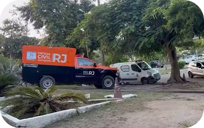
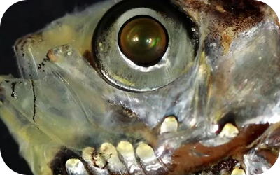
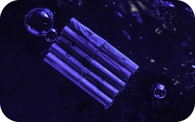
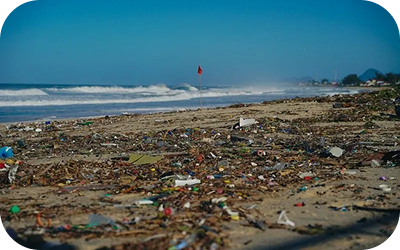
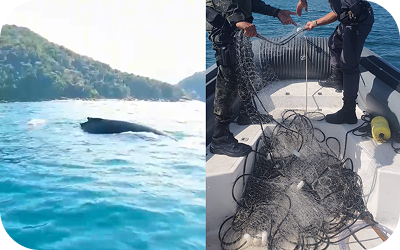

Corpo de Vinícios Marques Macedo, de 18 anos, foi levado para o IML de Cabo Frio;

Cientistas descobriram um novo tipo de célula visual em peixes de águas profundas;

Tubos de metal podem permanecer flutuando independentemente do tempo ou da gravidade dos danos sofridos com o novo design;

Mutirão com 100 pessoas foi mobilizado para limpar as áreas mais afetadas, como a praia de Ponta Negra,

Rede de pesca ilegal foi apreendida em Ubatuba na última quinta-feira (17);